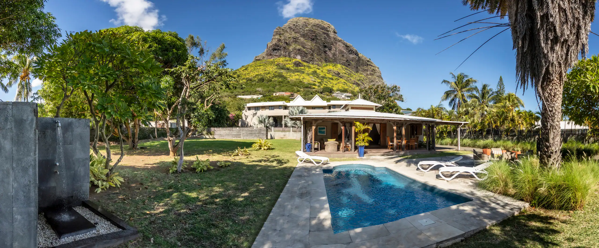

Вілла біля Ле-Морна, два авто, два кайти, 28 вересня — 12 жовтня. Ця сторінка — єдине джерело правди на всю поїздку: що вже вирішено, що робимо зараз і чим живемо кожен із чотирнадцяти днів. Домовились у чаті — переносимо сюди.
—
днів до виїзду
6
у групі
14
ночей біля Ле-Морна
2 + 2
авто + кайтери
Файл, надісланий у месенджер, застаріває в момент відправки: у кожного своя копія й нікому не видно змін. Тому план живе за постійною адресою, а в чаті — тільки посилання на неї.
Адреса плану
Закріпіть у чаті групи:
joyshmitz.github.io/mauritius-2026
Правило
Обговорюємо в чаті — рішення переносимо сюди. Що не тут — того не домовлено.
Оновлення
Змінює лише координатор, одним повідомленням «оновив: що саме». Версія й дата — у підвалі.
Спільний стан
Галочки тут — особисті, для одного пристрою. Спільне — статуси й витрати — живе в двох таблицях, які сайт підтягує живцем.
Дати, маршрут, район і стиль відпочинку зафіксовані. Лишилося закрити кілька практичних питань — статус кожного нижче, дедлайни під ним.
28.09–12.10, 14 ночей. Миколаїв → Кишинів (RMO) → Стамбул (IST) → Маврикій (MRU) одним квитком TK, назад так само.
Без жорсткого розкладу: щовечора обираємо, яким буде завтра. Каркас днів — орієнтир, не закон.
Робочий варіант: своє захисне веземо, кайти й дошки орендуємо на місці. Чекаємо «так» від обох кайтерів і перевірену оренду.
Два компакти у локальному прокаті з доставкою до вілли. Підтвердити модель, місткість, франшизу й паркування.
Медичне — всім шістьом. Кайтерам — поліс, де кайтсерфінг дозволено чорним по білому. Страховика ще не обрали.
Місце знайдено й подобається. Чекаємо письмових відповідей господаря — лист готовий, лишилося надіслати.
Правила поділу є, але валюту, резерв і правило скасувань ще не погодили.
Шість напрямів визначено — імен поки жодного. Почати з координатора.
Залізне правило
Поки немає письмових підтверджень — жодних нових неповоротних оплат: ні за авто, ні за спортивний багаж, ні за розваги чи доппослуги вілли. Усне «та все буде добре» не рахується.
Відповіді збережені, непідтверджене виписано окремо.
Рейси, пересадки, норми багажу, трансфер до RMO.
Клас машин відомий, місткість перевірено, запасний мінівен знайдено.
Поліси на шістьох; кайтсерфінг у двох полісах — письмово.
Спільне й особисте, резерв, валюта обліку, правило скасувань.
Перехідники (тип G), багажна вага, аптечка, мітки для валіз.
Кожна валіза зібрана начорно, із запасом маси й обʼєму.
Здоровʼя, страхування, правила вʼїзду, чикунгунья, прогноз і морські попередження.
Анкети заповнені, документи офлайн, валізи зважені, бус підтверджений.
Із запасом на кордон і реєстрацію. Наступного ранку — лагуна.
Таблицю створено, але ще не опубліковано — див. інструкцію в README або напишіть мені посилання «Publish to web → CSV», і цей блок оживе.
Веде цей план, фіксує рішення, мʼяко нагадує про строки.
Переліт, пересадки, багаж, кордон, трансфер до RMO.
Оренда спорядження, станції, місткість авто, запасний транспорт.
Листування з господарем, письмові підтвердження, перевірка при заселенні.
Порівняння полісів, аптечка, контакти допомоги, передвильотні перевірки.
Спільна каса, журнал витрат, туристичний збір, захищена папка групи.
Мікроавтобус знімає три проблеми одразу: стоянку в Кишиневі на 15 діб, «Зелену картку» і багаж шістьох. Далі — один квиток TK до самого острова.
~320 км, 5–7 год з кордоном. Черги на Паланці помірні, але закладаємо +1–2 год (статус: kordon.customs.gov.ua). Пасажирам — лише біометричні паспорти, документи на бус — на перевізнику. Домовляємось одразу про обидва кінці: подача 27.09 і зустріч 13.10 за номером рейсу, не за годиною.
~2 год, до 4 рейсів на день. Один квиток TK на весь маршрут — наскрізна реєстрація: багаж здаємо в Кишиневі, забираємо в Порт-Луї. Орієнтир туди-назад: ~900–1300 USD/особа.
Домовлене місце зустрічі, якщо розділимося. Рідини й ручна поклажа за правилами — не втрачаємо час на контролі.
~9,5 год, щодня, A350/A330 — TK єдиний прямий перевізник. Прибуття вранці 28.09.
Віза українцям — безкоштовно після прибуття, до 60 днів: паспорт 6+ міс., зворотні квитки, бронь житла, кошти (~$100/день), страховка. Mauritius All-in-One Travel Form заповнюємо до вильоту. Пошкодження багажу оформлюємо до виходу із зони видачі.
Варіант А (робочий): трансфер-мінівен €72–84 за всю групу + авто з доставкою до вілли. Варіант Б: оренда в аеропорту — але 6 людей + кайт-сумки в один мінівен не влазять: або 2 авто, або мінівен + окреме перевезення багажу.
Кайт-багаж — якщо все ж веземо своє
Ліміт TK для спортобладнання — до 292×60 см, попереднє повідомлення обовʼязкове. За офіційною таблицею зборів стикувальний маршрут може коштувати до ~€280 за комплект в один бік (агрегатори з €30–60 застаріли) — разом €500–1100 на два комплекти туди-назад. Суму підтверджуємо в кол-центрі TK при бронюванні. Саме тому робочий варіант — оренда на місці.
Кайтери на воді з ~11:00 до ~16:00, тож ранки й вечори — спільні. Каркас гнучкий: кайт-дні міняємо місцями з екскурсійними за прогнозом вітру.
Вітер, море, спорядження й самопочуття кажуть «так».
У четвірки — своя програма на день.Далека поїздка, похід або велика екскурсія.
Дві великі поїздки поспіль не ставимо.Пляж, басейн, смачна їжа, короткі вилазки.
Легкий день без довгих переїздів.Втома, хвороба, небезпечне море — або просто нічого.
Жодних обовʼязкових активностей.Вечірній ритуал
Увечері дивимось Windy на Le Morne і прикидаємо завтра — заодно домовляємось про обід, бо саме він щоразу випадає з плану. Вранці звіряємось із вітром, морем і самопочуттям. Вирішуємо без тиску на тих, кому хочеться іншого темпу. Будь-хто може зупинити небезпечну активність — без голосувань і образ. Якірні брони (катамаран, каньйонінг, ланч у Chamarel) ставимо на дні з найгіршим вітровим прогнозом.
| № | Дата | План | Тип |
|---|---|---|---|
| 0 | нд 27.09 | Бус із Миколаєва → Паланка → RMO, вечірній рейс TK, ніч у повітрі | дорога |
| 1 | пн 28.09 | Приліт MRU → трансфер → заселення й перевірка вілли → великий закуп → захід сонця на пляжі | разом |
| 2 | вт 29.09 | Кайтери: перша сесія, оформлення на станції · решта: розвідка La Gaulette, пляж, фруктові лотки | кайт |
| 3 | ср 30.09 | Кайт · четвірка: Chamarel — кольорові землі, водоспад, дегустація на ромовій дистилерії | кайт |
| 4 | чт 01.10 | Sunrise-хайк на Le Morne Brabant усі разом (старт 04:30) → кайт після 11:00 | разом |
| 5 | пт 02.10 | Кайт · четвірка: Black River Gorges → увечері всі в ENSO, жива музика | кайт |
| 6 | сб 03.10 | Катамаран на Île aux Bénitiers з дельфінами, BBQ на борту → увечері Big Willy’s | разом |
| 7 | нд 04.10 | Пляж і басейн, домашня вечеря: salade d’ourite + гриль | пауза |
| 8 | пн 05.10 | Гастро-день: ринок Mahébourg (7:00–16:00) → Gris Gris і південне узбережжя по дорозі | гастро |
| 9 | вт 06.10 | Кайт · четвірка: каньйонінг Tamarind Falls «7 Cascades» | кайт |
| 10 | ср 07.10 | Кайт · четвірка: Port Louis — Central Market + Chinatown → караоке в Big Willy’s | кайт |
| 11 | чт 08.10 | Дайвінг або снорклінг зранку → ланч «La Table Créole» у Chamarel | разом |
| 12 | пт 09.10 | Кайт, можливо даунвіндер La Gaulette → Le Morne · четвірка: Vallée des Couleurs — квади, зіплайн | кайт |
| 13 | сб 10.10 | Резерв: пропущене через погоду / Bel Ombre / повтор улюбленого | резерв |
| 14 | нд 11.10 | Прощальна сесія зранку, сушка й пакування, фінальна вечеря Heritage Sunset | разом |
| 15 | пн 12.10 | Виселення → MRU → Стамбул → Кишинів, 13.10 бус до Миколаєва | дорога |
| Хто | 3 речі, які хочу | 2 речі, яких не хочу | Воджу? |
|---|---|---|---|
Вписане зберігається лише в цьому браузері — фінальну версію дублюємо в чат.
Хвіст високого сезону: стабільний пасат SE/ESE, який прискорюється горою Ле-Морн. Перша половина поїздки надійніша за другу — важливі брони ставимо на слабкі дні.
днів із робочим вітром у це вікно
вересень · жовтень мʼякший, 15–22
вітер вмикається; термічний пік 13:00–16:00
вода: шорті 2 мм, риф-бути обовʼязково
Спорядження — відкрите рішення
Робочий варіант: захисне (шолом, жилет, трапеція, взуття) — своє, кайти й дошки — оренда на станції. Якщо все ж веземо своє: квівер 8 + 10 + 12 м² (при сильних циклах буває 25–30 вузлів, 12-ка рятує слабкий жовтень) + кайт-багаж TK у бюджет.
| Спот | Що це | Кому |
|---|---|---|
| Kite Lagoonкарта | Закрита бухта, флет, по пояс — перед RIU Turquoise, під самою горою | Навчання, фрістайл — людно, школи |
| La Pointeкарта | Великий флет-полігон біля JW Marriott, є човен-безпека | Самостійний фрірайд — наша база |
| Little Reef | Мʼяка хвиля для входу у вейврайдинг | Intermediate |
| Manawa | Велика, але мʼяка хвиля в глибокий канал | Перша «велика» хвиля, краще на високій воді |
| One Eye | Ліва труба світового класу над мілким рифом | Тільки експерти, тільки з rescue-човном |
Головна небезпека
Вся вода лагуни виходить через один пас біля One Eye — на хвильові споти лише з човном-супроводом. Лагуна непридатна ~1–2 год навколо відпливу: tide-графік звіряємо щодня, разом із прогнозом вітру.
Перед виходом на воду — щодня
Windy на Ле-Морн · попередження про високі хвилі · графік відпливів беремо на станції в перший день і вішаємо на холодильник. Ескорт на One Eye / Manawa домовляємо ще ввечері — вранці човен уже може бути зайнятий.
Це головний механізм різноманіття для шістьох: кайтери лишаються на споті, четвірка їде островом. Ранки, вечори та штильні дні — спільні.
База на 14 ночей: лагуна за кілька хвилин, La Gaulette з магазинами за 5–10 хв, великі супермаркети Black River за 15–20. Питання до господаря — у розділі «Вілла».

Великий закуп раз на тиждень, щоденне — поруч у La Gaulette, риба — через WhatsApp. Продукти й алкоголь на всіх: Rs 15–20 тис./тиждень (€290–385), тобто ~€100–130 з особи за два тижні.
Black River / Tamarin, 15–20 хв. London Wayкарта — дешево, азійський асортимент, усі спеції; будні 8:30–19:00, пт/сб до 20:00, нд лише до 12:30 — великий закуп у неділю не плануємо. Super U Tamarinкарта — вино, сир, «європейський» кошик.
La Gaulette, 5–10 хвкарта: місцевий супермаркет + фруктові лотки вздовж дороги. Пекарня: pain maison Rs 4–6/шт — беремо зранку, до обіду розбирають.
Fish Whisperer при London Supermarket, WhatsApp +230 5732 5523: тунець Rs 950/кг, дорадо Rs 1150, марлін Rs 650. Пишемо за день — привезуть потрібне. Восьминіг — у рибалок на пляжі La Gaulette зранку, Rs 300–500/кг.
Жовтень — пік ананасів; манго ще не сезон (з листопада). Папайя, банани, кокоси — завжди. Phoenix Rs 50/330 мл, ром Green Island <Rs 400/л, Chamarel VSOP Rs 1600.
Головне правило: до 12:00 відомо, хто де обідає. Група роздільна щодня, тому обід майже ніколи не буде спільним — і це нормально, якщо домовлено зарані.
На воду — не поївши. Щільний сніданок о 8:30, у сумку — 2 л води, банани, самоса або gato pima з La Gaulette. Повний обід — після сесії, близько 16:30, і тоді вечеря зсувається на 20:00.
Обід — частина маршруту, не випадковість: Chamarel — креольський стіл або L’Alchimiste на дистилерії; Port Louis — Chinatown; Mahébourg — ринок; каньйонінг і квади — обід від організатора.
У спеку ніхто не хоче готувати обід — тому вон готується зранку й чекає в холодильнику: vindaye, салат із восьминога, серцевина пальми, багет, фрукти. Це й обід, і вечеря для тих, хто прийшов пізно.
| Обід поруч | Що там | На особу |
|---|---|---|
| Лотки й снеки La Gauletteкарта | dholl puri, самоса, gato pima, смажена локшина на винос | Rs 50–150 |
| Wapalapamкарта | Біля старту хайку, тінь і нормальна кава — база для «поблизу»-днів | Rs 400–900 |
| Emba Filao на пляжікарта | Стіл просто на піску, риба дня; у пʼятницю телефонуємо заздалегідь | Rs 150–400 |
| Ocean Vibes / бар станції | За крок від споту — єдиний варіант, коли виходять із води по черзі | Rs 400–700 |
Половину готуємо самі з місцевого: salade d’ourite, рибне каррі, rougaille, vindaye, гриль-марлін, cœur de palmiste — усі спеції є в London Way. Доставки в Ле-Морні фактично немає — розраховуємо на самовивіз. Чайові необовʼязкові: 5–10% або округлити.
| Рівень | Де | Чек на особу |
|---|---|---|
| Прості локальні | Chez Bhim · Chez BB · Emba Filao на пляжі — у пʼятницю бронювати | Rs 150–400 |
| Середні | ENSO · Ocean Vibes · Wapalapam · Heritage Sunset | Rs 400–900 |
| Особлива нагода | East у LUX* · Blue Marlin у Paradis | Rs 2000–4000 |
Назви в розділі «Їжа» нічого не говорять, поки їх не попробуєш. От розшифрування — і сім рецептів на шістьох із того, що реально лежить у London Way і в рибалок на пляжі.
| Назва | Що це насправді | Де брати та як їсти |
|---|---|---|
| dholl puri | Два тонкі млинці з тіста, у яке вмішано молотий жовтий горошок; між ними каррі з квасолі, чатні й чилі-паста | Вуличні лотки, 2 шт = перекус. Національна страва № 1 |
| farata / roti | Пшеничний коржик, шаруватий від масла — локальний хліб до каррі | Купуємо готовими пачками, гріємо на сухій пательні 30 сек |
| gato pima | Обсмажені кульки з дробленого гороху, зелені чилі та коріандру, розмір грецького горіха | Лотки вранці. Ідеальне в сумку на спот |
| rougaille | Не страва, а базовий соус: томати, цибуля, часник, тимʼян, імбир, чилі. У ньому тушать рибу, сосиски, яйця | Готуємо самі — рецепт № 1 нижче |
| vindaye | Риба або восьминіг у маринаді з куркуми, гірчиці, часнику й оцту; їдять холодним | Готуємо зранку, їмо на обід. З багетом |
| salade d’ourite | Салат із вареного восьминога: червона цибуля, лайм, чилі, олія | Восьминіг — у рибалок у La Gaulette вранці |
| cœur de palmiste | Серцевина пальми, сира; смак між спаржею й молодим горіхом. Звуть «мільяонерським салатом» — на одну порцію гине пальма | Обовʼязково спробувати раз; готовий у банках у Super U |
| mine frit · mine bouille | Смажена й відповідно варена локшина з овочами й мʼясом — місцевий фастфуд китайського коріння | Chinatown у Port Louis, лотки на ринках |
| boulettes | Парові фрикадельки (риба, курка, тофу, листя) у прозорому бульоні | Порціями по 4–5 шт, замовляти кілька видів |
| briani | Плов шарами: рис, курка або козлятина, картопля, йогурт, шафран | Святкова страва; беремо готовим у локальних |
| satini · mazavaroo | Сатіні — свіжий чатні (кокос, томат або манго). Мазавару — палюча чилі-паста на олії | Кладемо на стіл до всього; мазавару — на кінчику ножа |
| alouda | Солодкий напій: молоко, насіння базиліка, агар-агар, сироп — місцевий бубл-ті | Ринки; класика — Pillay у Port Louis |
№ 1 · вечеря · 40 хв
1,2 кг тунця стейками · 8 томатів · 2 цибулини · 5 зубків часнику · шматочок імбиру · гілка тимʼяну · 10 листків каррі · 1 зелене чилі · рис
Соус — універсальний: так само робиться rougaille із сосисками або яйцями на сніданок.
№ 2 · обід · 25 хв + маринад
1,2 кг тунця або дорадо · 2 ст.л. куркуми · 2 ст.л. гірчичних зерен · 6 зубків часнику · імбир · 150 мл оцту · 100 мл олії · цибуля
Готується ввечері або вранці до кайту — на третій день смакує краще, ніж у перший.
№ 3 · обід · 1 год
1,5 кг восьминога · 2 червоні цибулини · 4 лайми · коріандр · чилі · оливкова олія
Головне — не спішити з варінням: недоварений восьминіг гумовий.
№ 4 · вечеря · 30 хв
6 стейків по 200 г · 3 лайми · 4 зубки часнику · олія · мазавару · батат або салат
Марлін дешевший за тунця й тримає гриль краще — беремо саме єго.
№ 5 · вечеря · 50 хв
1,5 кг курки · 3 ст.л. каррі-порошку · 4 томати · 3 картоплини · каррі-лист · часник · імбир · farata
Залишки наступного ранку — найліпший сніданок у роті (той самий «мавриканський» із ротації).
№ 6 · гарнір · 15 хв
Cœur de palmiste (свіжа або банка) · 2 авокадо · лайм · майонез або олія · кріп
Свіжу серцевину купуємо один раз — це дорого й неекологічно; далі банка.
№ 7 · десерт · 10 хв
9 бананів · 60 г масла · 4 ст.л. цукру · 100 мл рому Green Island · лайм
Фінал для прощальної вечері 11 жовтня.
Два правила кухні на шістьох
Готує одна пара, миє інша — і черга записана на аркуші на холодильнику, а не «як вийде». Рибу беремо в день готування: у вологому кліматі навіть у холодильнику вона живе добу, не дві.
І жодних перерахунків заднім числом. Курс для орієнтиру: ≈ 50–52 MUR/€.
| Стаття | € на особу, орієнтовно |
|---|---|
| Авіа RMO–MRU туди-назад | 850–1200 |
| Кайт-багаж, якщо веземо своє — на двох кайтерів | +250–550 кожному з двох |
| Мікроавтобус Миколаїв–Кишинів ×2, на шістьох | за домовленістю |
| Страховка (кайтерам — зі спорт-опцією) | 30–90 |
| Житло: вілла на 6, 14 ночей | за нашою бронню |
| Авто ×2 + бензин, на шістьох | ~130–180 |
| Їжа: продукти + ресторани + гастро-виїзди | ~300–450 |
| Активності: катамаран, хайк, каньйонінг, квади… | ~200–350 |
| Кайт-сервіси: оренда/rescue, на двох кайтерів | ~50–150 кожному з двох |
| Разом без житла | ~1600–2400 |
Журнал з’явиться тут, щойно таблицю витрат опублікуємо як CSV: суми по людях і хто кому винен — рахуються автоматично.
| Категорія | Що сюди входить | Як платимо |
|---|---|---|
| Спільне | Вілла, авто, пальне, туристичний збір, базові продукти, вода, побутові дрібниці | Порівну, зі спільної каси (kitty) |
| Особисте | Розваги, алкоголь, покупки, апгрейди, особисті медичні чи спортивні доплати | Кожен за себе |
| Зміна плану | Доплата чи втрата коштів через особисте рішення одного з нас | На групу не перекладається без окремої згоди |
| Резерв | Непередбачені групові витрати | Сума: · валюта: |
Про що вже знаємо
Туристичний збір — 3 € з дорослого за ніч. На шістьох за 14 ночей це 252 €, якщо збір не включено у вартість вілли. Питання стоїть у листі господарю.
Місце чудове — тепер переконаймося, що воно безпечне і зручне саме для шістьох: датчики диму, кондиціонери в спальнях, вода й резерв, паркування на два авто, сейф, прибирання, туристичний збір.
Вітаємо! Ми приїжджаємо групою з шести дорослих 28 вересня — 12 жовтня 2026 року. Щоб завершити підготовку, просимо письмово уточнити кілька деталей:
Дякуємо! Просимо, якщо можливо, додати фото датчиків, паркування та спалень.
По одній зареєстрованій валізі, мʼякі рюкзаки замість жорстких кейсів у салон — тоді два авто вміщують і людей, і багаж.
Кожне авто вміщує 3 людей + 3 валізи + 3 мʼякі сумки + воду на дорогу. Тест пройдено, якщо:
Зʼявляються довгі кайт-сумки → одразу мінівен або окреме перевезення багажу з MRU.
| Взяти з дому | Купити на місці | Не везти | Спершу уточнити |
|---|---|---|---|
| Ліки, рецепти, аптечка | Шампунь, пральний засіб | Фен і праску | Пляжні рушники |
| Перехідники (тип G), багажна вага | Великі упаковки SPF і репеленту | Посуд, чайник, тостер | Питну воду / фільтр |
| Вітровка, взуття для коралів, гермомішок | Вода, лід, базові продукти | Постіль, великі запаси їжі | Сейф, москітні сітки |
| Мітки для багажу, копії документів | Пакети, папір, таблетки для посудомийки | Вугілля, побутову техніку | Датчики, резервне живлення |
Про норми ваги
Остаточні норми — з конкретного квитка й авіакомпанії, що фактично виконує рейс. Якщо дозволено 23 кг — пакуємось на 20–21 кг: похибка ваг і сувеніри скажуть дякую.
Страховка, правила виходу на воду і здоровʼя — три речі, які перевіряємо без компромісів.
Кайтерам: кайтсерфінг прямо названий у полісі або доданий розширенням для водних видів спорту. Усне запевнення продавця — не аргумент. Окремо: франшизи й винятки, рятувальні роботи на воді, ушкодження орендованого спорядження, франшиза на авто.
Здоровʼя: репелент — також удень. Гарячка, висип чи біль у суглобах → день паузи + дзвінок страховій. Ситуацію з чикунгуньєю перевіряємо за 14 і за 7 днів до вильоту; погоду й морські попередження — щодня.
| Що | Де збережено / значення |
|---|---|
| Адреса й координати вілли | |
| Телефон господаря | |
| Телефон страхової допомоги | |
| Найближча клініка | |
| Контакти оренди автомобілів | |
| Кайт-станція / рятувальна служба | |
| Контакт людини в Україні |
Все невирішене живе тут, а не «десь у чаті». Дату можна посунути, власника — ні.
| № | Питання | Наступний крок | Хто | До |
|---|---|---|---|---|
| 1 | Хто координатор плану? | Погодити імʼя | 10.08 | |
| 2 | Чи безпечна й зручна вілла? | Надіслати лист господарю | 10.08 | |
| 3 | Точні рейси, час і норми багажу? | Заповнити спільну табличку | 14.08 | |
| 4 | Чи вміщують два авто людей і багаж? | Розміри або пробне завантаження | 17.08 | |
| 5 | Кайти: остаточно орендуємо? | «Так» обох кайтерів + перевірена станція | 17.08 | |
| 6 | Які страхові поліси? | Порівняти умови, кайтсерфінг письмово | 21.08 | |
| 7 | Як ділимо витрати? | Підтвердити правила з розділу «Гроші» | 24.08 | |
| 8 | Хто готовий водити? | Заповнити таблицю побажань | 24.08 |